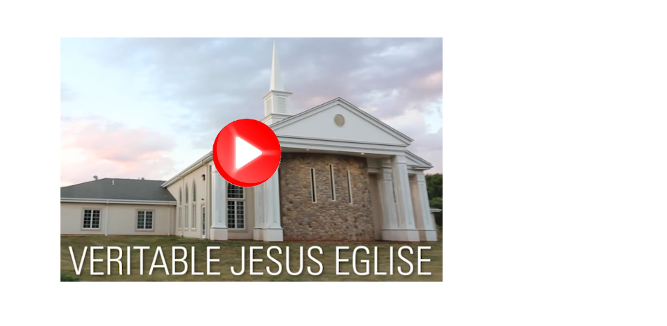
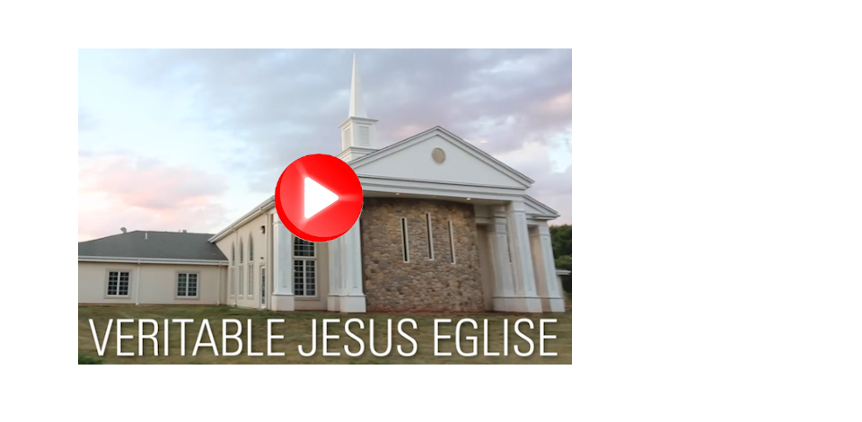
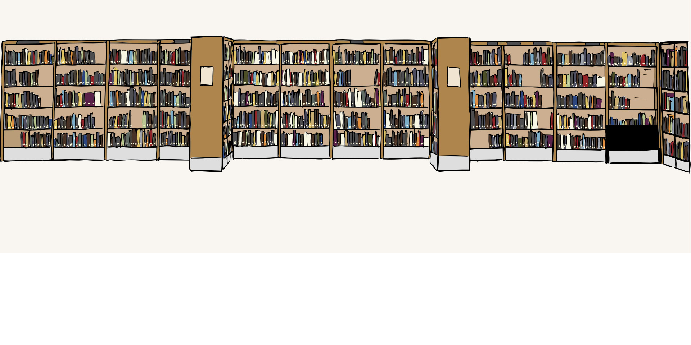

-

 Alléluia !Bienvenue à laVéritable Jésus Église
Alléluia !Bienvenue à laVéritable Jésus Église -
 “Béni soit l'homme qui se confie dans l'Éternel, Et dont l'Éternel est l'espérance! Il est comme un arbre planté près des eaux.." -Jérémie 17:7-8
“Béni soit l'homme qui se confie dans l'Éternel, Et dont l'Éternel est l'espérance! Il est comme un arbre planté près des eaux.." -Jérémie 17:7-8 -

Consulter les livres,revues et articlesde la bibliothèque
-
Sermons disponiblesen français et chinoisAccédez à la listeVia l'onglet "sermons"sur le menu du haut